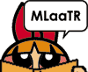

ReadMe!Girls!用語の基礎知識(草稿）PpGサイトとかいいながら、PpG以外のこととか平気で書くスカポン太の文章を読み解くための用語集。一見さん向け？ |
||||||||||||||||||||||||||||||||||||||||||||||||||||||||||||||||||||||||||||||||||||||||||||||||||||||||||||||||||||||||||||
|
まあなんですか、長いことおつきあいしてもらってる方は別として、初めて来た方なんかには、たまに、なに言ってるんだかわからない言葉を使ってることが多いんじゃないかと思い始めた今日この頃。PpG好きできたはいいけど、特にCSとかケーブルに加入してなくてカートゥーン話とかわけわかんないとかあるんじゃないかと。カートゥーンは見てても、未放送ネタとかアメコミネタとか。そんな人のために〜とか思ってメモっていたんですが、なんか違う方向にいってしまったような、スカポン太のメモを公開したします。 どういう風にまとめようかまだ決めてないうえに、まとまるか不安になったので、未整理のまま公開。読みにくいですが、ご勘弁。（検索機能とか上等なものはありません）
最後までお読みになったオヒマな方どうもありがとう。 まだスカポン太がわけわからないこと言ってるよ、とか思ったらリクエスト次第で追加するかもしれません。（ていうか自分で勝手に追加するかも）いまんとこ未整理なんで、ノリと気分の順番になってますが、やっぱりアルファベットとかあいうえお順にしたほうがいいかねえ。 |
||||||||||||||||||||||||||||||||||||||||||||||||||||||||||||||||||||||||||||||||||||||||||||||||||||||||||||||||||||||||||||
| 【HOME】【SUGER & SPICE】 |